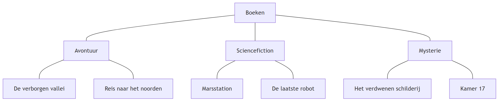
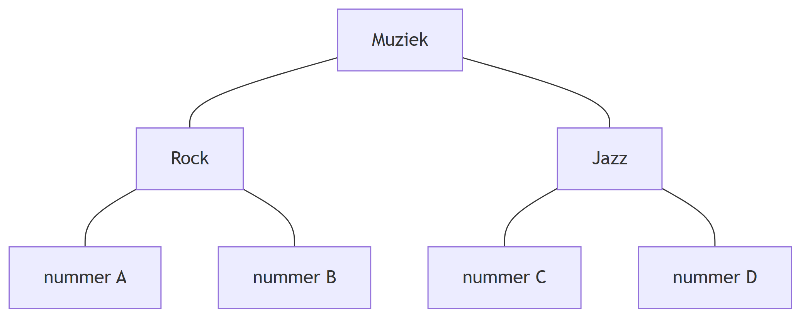
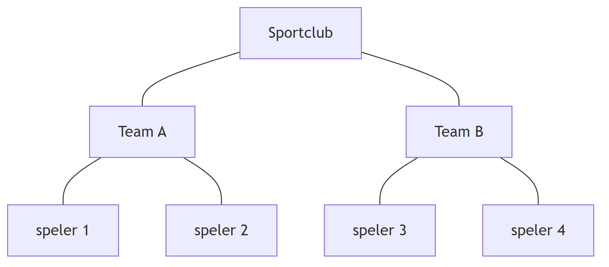

Visual First Datastructuurdiagram
Datastructuurdiagram
Een programma kan meerdere gegevens tegelijk gebruiken.
Wanneer gegevens bij elkaar horen, helpt het om zichtbaar te maken hoe deze gegevens zijn georganiseerd.
Daarvoor kun je een datastructuurdiagram gebruiken.
Een datastructuurdiagram laat zien:
- welke gegevens worden opgeslagen;
- welke gegevens bij elkaar horen;
- hoe gegevens zijn gegroepeerd;
- welke relaties er tussen gegevens bestaan.
Het diagram beschrijft de structuur van de gegevens, niet de stappen die een programma uitvoert.
Een datastructuurdiagram is geen vaste soort diagram. Het gaat erom dat je zichtbaar maakt hoe gegevens zijn georganiseerd en met elkaar samenhangen.
Gegevens groeperen
Gegevens kunnen bij elkaar horen omdat ze iets gemeenschappelijks hebben.
Stel dat een bibliotheek boeken indeelt op genre.
Een eenvoudige structuur kan bijvoorbeeld zijn:

Het datastructuurdiagram maakt hier de structuur van de gegevens zichtbaar.
Boeken vormt de verzameling. Daarbinnen zijn de gegevens gegroepeerd in verschillende genres. Binnen ieder genre staan de boeken die bij die groep horen.
Structuur en gegevens
In een datastructuurdiagram kun je onderscheid maken tussen de structuur en de gegevens die daarin worden opgeslagen.
Bijvoorbeeld:

Rock en Jazz geven aan hoe de gegevens zijn gegroepeerd.
De nummers zijn de gegevens binnen die groepen.
Nieuwe gegevens kunnen aan een bestaande groep worden toegevoegd zonder dat de hele structuur hoeft te veranderen.
Gegevens terugvinden
Een goede datastructuur helpt niet alleen bij het opslaan van gegevens.
De structuur moet ook duidelijk maken waar je gegevens kunt terugvinden.
Bijvoorbeeld:

In het diagram kun je zien:
- welke teams er zijn;
- welke spelers bij een team horen;
- waar een bepaalde speler binnen de structuur is opgeslagen.
De manier waarop gegevens worden georganiseerd bepaalt daarmee ook hoe je ze later kunt terugvinden.
Dezelfde gegevens, een andere structuur
Dezelfde gegevens kunnen vaak op verschillende manieren worden georganiseerd.
Een verzameling films zou bijvoorbeeld kunnen worden gegroepeerd op:
- genre;
- jaar;
- regisseur;
- leeftijdscategorie.
Er bestaat daarom niet automatisch één juiste datastructuur.
Welke structuur bruikbaar is, hangt af van wat je met de gegevens wilt kunnen doen.
Van probleem naar datastructuurdiagram
Wanneer je een datastructuurdiagram maakt, denk je na over:
- welke gegevens relevant zijn;
- welke gegevens bij elkaar horen;
- welke groepen nodig zijn;
- hoe gegevens binnen die groepen worden georganiseerd;
- hoe nieuwe gegevens kunnen worden toegevoegd;
- hoe opgeslagen gegevens later kunnen worden teruggevonden.
Controleer je diagram door te proberen verschillende gegevens toe te voegen en weer terug te vinden.
Van datastructuurdiagram naar code
Een datastructuurdiagram beschrijft eerst hoe gegevens logisch zijn georganiseerd.
Het schrijft nog niet voor hoe die structuur in Python moet worden gemaakt.
Een structuur waarin meerdere gegevens bij elkaar worden bewaard, kan later bijvoorbeeld met een Python list worden uitgewerkt.
Het datastructuurdiagram helpt je daarmee eerst na te denken over welke gegevens je nodig hebt en hoe deze samenhangen, voordat je beslist hoe je deze in code opslaat.